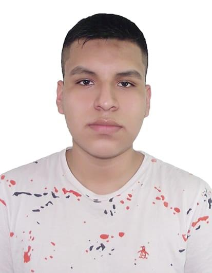

Mis padres son Luis Vicente Luyo Sanchez y Rosana Marcela Valverde Toribio.
Tengo 2 hermanas, la mayor, Lisbeth Olinda Romero Valverde y la menor se llama Gabriela Milagro Luyo Valverde.
Viví hasta los 4 años en el distrito de San Martín de Porres, luego me mude al distrito del Rímac, donde me encuentro viviendo actualmente.
Curse mi educación inicial y primaria en el colegio Jorge Basadre, cuatro años de mi educación secundaria en el colegio Nuestra Señora de las Mercedes y mi ultimo año en el colegio Leoncio Prado, siempre ocupando el tercio superior de mi aula. Decidí estudiar la carrera de Ingeniería de Software en la Universidad San Ignacio de Loyola porque es la que mas se apega a lo que me quiero dedicar profesionalmente.
Mi aspecto físico:⠀⠀
 Mido 1.79m, soy de contextura normal, tez morena, cabello negro y ojos negros.
Mi aspecto emocional:
Tiendo a la introversión, me muestro tranquilo y reservado, puedo lograr interactuar adecuadamente con mis amistades y rindo más en situaciones donde trabajo solo. Emocionalmente inmaduro acorde a mi edad cronológica. Tengo buena autoestima pero en pocas ocasiones muestro inseguridad, me cuesta mostrarme del todo con las demás personas y soy reservado con mis temas personales.
Mi aspecto intelectual:
Me encuentro dentro de la categoría Normal al Promedio, es decir que mi desarrollo intelectual es acorde a mi edad cronológica, puedo mantener atención y concentración adecuada, pero es mayor cuando el tema llega a interesarme. Cuento con capacidad para expresar ideas, reconocer normas sociales y reglas de conductas convencionales logrando acatarlas.
Mis fortalezas:
Soy amable con cualquier persona, siempre veo la manera en la que se le puede ayudar si esta dentro de mis capacidades. Sé escuchar la opinión de las demás personas, de esa manera, las actividades que realizo salen mejor.
Mis debilidades:
Soy muy desordenado, no pongo un orden a las actividades que realizo, y eso a larga me trae diferentes problemas. La tendencia a la introversión a veces puede llegar a incomodarme, en un par de ocasiones no he podido expresarme como he deseado. Suelo ser irresponsable cuando la actividad no es de mi interés, eso llega afectarme académicamente.
Mis relaciones sociales:
Mi círculo social es muy pequeño, puesto que a pocas personas considero como amigos, para ello debe de haber honestidad, confianza y lealtad entre los dos. Puedo salir a fiestas, ir al cine o a comer con mis amigos sin ninguna dificultad.
Mis principales éxitos y fracasos:
Por el momento, considero el haber acabado mi educación secundaría de manera exitosa, puesto que no he vivido lo suficiente para llegar a un gran éxito. Si se podría considerar fracaso alguno, sería el no poder jugar basket, ya que sufro de la enfermedad de Osgood-Schlatter, debido a que crecí velozmente.
Mis decisiones mas significativas:
Hasta el momento, elegir la carrera de Ingeniería de Software en la Universidad San Ignacio de Loyola ha sido la decisión con mas significado para mí, puesto que conlleva una gran responsabilidad de por medio.